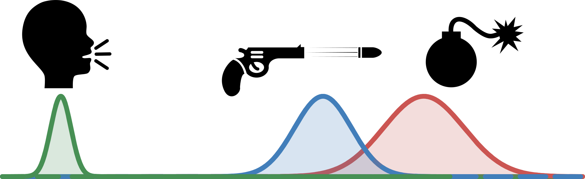
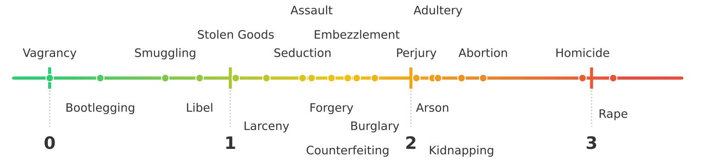

This is episode 1 in series of blog posts that seek to explain how
mental representations became a powerful tool in psychology and
cognitive neuroscience from the early 20th century to the present day.
This episode focusses on the dire straits the field found itself in the
early 20th century and the novel quantitative paradigm that allowed the
field to objectively quantify psychological phenomena (perhaps for the
first time!).
The Crisis of Confidence
In the early 20th century, psychology was facing a crisis of
confidence. As Joel Michell pointed out in his very well written 1999
book, Measurement in Psychology [1],
psychology faced an immense pressure to be quantitative like Physics was
at that time was. Note that Einstein, Bohr and Planck were all
revolutionizing the way we think about the physical world at that time.
The main way they were doing this by coming with new theories but with
objective ways of to the phenomena. As Michell points out in his book,
psychology as a field was not viewed with much respect by the scientific
community felt a critical need to be more quantitative to earn
legitimacy.
This is notwithstanding the fact that later in the century, the
Ferguson report [2], commissioned by the British
Association for the Advancement of Science released in 1940, concluded
that there is no real way to perform psychological measurement thereby
eviscerating the very foundation of psychology as a science - at least
at the time.
Why is similarity needed? And why not absolute values?
The main reason for this evisceration was largely due to the fact
that psychology did not have a ground truth to measure against. The
canonical example of “ground truth” from physics is that of length.
There exists an absolute length of a ruler and of the standard
measurement units (meters) for length. However, in psychology, there is
no rule or scale to measure the perception of loudness of a sound
perceived by an individual even if there are objective measures of
loudness (decibels).
This becomes even harder when you consider concepts that do not have
a physical correlate like sound does. For example, aesthetic appeal of a
painting. How do you measure the beauty of a painting using an absolute
scale? You cannot - at least not in a way that is objective and can be
agreed upon by everyone.
In the midst of this measurement crisis for psychology, L.L.
Thurstone in his 1927 paper, A Law of Comparative Judgement [3]
proposed a new way to perform psychological measurement. He argued that
while we as humans may not have an absolute scale, we possess a highly
sensitive comparison mechanism to compare any two stimuli via a relative
scale.
That is, we are not very good at saying “This sound is at 400 dB” but
we are very good at saying “Sound A is louder than Sound B”. The idea
that humans are more consistent in their relative judgements than
absolute judgements has been replicated repeatedly since then [4].
Absolute vs Relative Scales. Human perception does not
have an absolute scale to measure against like physical concepts like
length or weight. However, humans possess a high sensitive comparison
mechanism to compare any two stimuli via a relative
scale.
Scales: The 1D Era
While relative judgements allow one to get around the fact that there
exists no absolute scale to measure against, it still doesn’t allow one
to account for the fact that humans are highly inconsistent in comparing
stimuli due to factors like attention, fatigue etc.
The way that Thurstone was able to explain human inconsistency is via
assuming that internal noise could be modelled as a Gaussian
Distribution and that each time an individual made a judgement about a
particular stimuli, that judgement was a draw from that distribution.
More formally, if two sound stimuli \(\mu_{A}\) and \(\mu_{B}\) are presented to an individual
where the perceived loudness is sampled from \(N\left( \mu_{A},\sigma^{2} \right)\) and
\(N\left( \mu_{B},\sigma^{2} \right)\)
independently where \(x_{A}\) and \(x_{B}\) are the samples from the respective
distributions.
This way, each time the individual is presented with the same two
stimuli, the individual essentially draws from each of the two Gaussian
distributions to compare the resulting samples.
To model if the individual perceives stimulus \(A\) as louder than stimulus \(B\), we can compute the difference between
the two draws, \(\delta = x_{A} -
x_{B}\).
If \(\delta > 0\), the
individual perceives stimulus \(A\) as
louder than stimulus \(B\).
If \(\delta < 0\), the
individual perceives stimulus \(B\) as
louder than stimulus \(A\).
Consider a thought experiment with two sets of stimuli. The first
comparison is between a whisper and a bomb blast where the human
assesses on all trials that the bomb blast is louder than the whisper.
The second is between a bomb blast and a gun firing where the human
assesses that the bomb blast is louder than the gun firing only about
80% of the time. What this essentially tells you is that the loudness of
the bomb blast is very far from the loudness of the whisper, while the
loudness of the bomb blast is closer to the loudness of the gun
firing.

A whisper and a bomb blast are perceived as very
different in loudness, while a bomb blast and a gun firing are perceived
as less different in loudness due to increase in confusion between the
stimuli.
To formalize this, note that the difference between gaussian
distributions is also gaussian [5]. Therefore, the percentage of times
that the individual perceives stimulus A as different from stimulus B is
related to the distance between the two stimuli.
For example, if \(P(A > B) =
0.5\), then the distance between the means \(\mu_{A}\) and \(\mu_{B}\) is 0. If \(P(A > B) = 0.84\), then the distance
between the means is 1 standard deviation. If \(P(A > B) = 0.977\), then the distance
between the means is 2 standard deviations.
If these numbers seem familiar, it is because they are essentially
the same numbers that you would see in a standard normal distribution
table. Basically, the Inverse Cumulative Distribution Function (CDF) or
the Z-score function, \(Z\left( .
\right)\), evaluated on the probability of A being greater than B
gives you the distance between the means in terms of standard
deviations. Essentially you assume that \(D_{AB} = Z\left( P(A > B) \right)\).
With this technique, Thurstone essentially was able to derive a
quantitative scale for measuring the difference between two stimuli
based on the relative judgements. He turned the natural human error in
judgement into a feature of the measurement scale. (His paper
additionally described formulae for cases where the standard deviation
of the internal noise was not constant across stimuli. However, the same
idea holds.)
But wait, we just have a collection of pairwise distances? How do we
go from that to a scale? You might be thinking of Multidimensional
Scaling (MDS) here. But that was created only in late 1950s and early
1960s so Thurstone couldn’t have used it (We will go in detail about MDS
in a future episode). And also, this is only a One Dimensional Scale so
MDS is overkill when something far simpler would suffice.
The algorithm is actually pretty simple. They created a pairwise
distance matrix \(\mathbf{D}\) where
\(D_{ij}\) is the distance (Z-score)
between stimulus \(i\) and stimulus
\(j\) after aggregating over all of the
data. Then, to find the scale they just averaged over the columns of
\(\mathbf{D}\) to get a single value
for each stimulus. This is akin to taking a “centroid” of the stimulus
by comparing its relative score and distance to all other stimuli. By
averaging how much ‘better” or ‘worse” a crime is compared to every
other crime in the set, we find its unique coordinate on the moral map.
Then, if you sort the stimuli based on this centroid, you get the
scale.
Making the distance matrix from the the Z scored pairwise
probabilities and then averaging over the columns to get the scale for
each stimulus.
Using the 1D scale to evaluate morality
With this theoretical framework, Thurstone operationalized it to
learn scales for a variety of psychological phenomena but most famously
known for evaluating morality of various crimes [6].
In that study, Thurstone used the scale to evaluate the public’s
perception of morality for 19 crimes to build a scale that could capture
the moral judgments of individuals. He asked a total of 266 participants
to compare every pair of crimes (171 in total) and used the entire
aggregated data to learn the scale.
The resulting scale clearly had semantic sense but must be viewed
from the late 1920s moral perspective.

Thurstone’s Crowdsourced 1D Scale of Seriousness of
Various Crimes (1927) [6]
Serious crimes like Rape and Homicide are viewed as most immoral
while minor crimes like Bootlegging (selling alcohol - this was
Prohibition mind you) and Vagrancy are viewed as least immoral. One
could imagine that today, this scale could look very different.
This method was revolutionary for its time being able to
quantitatively model something as complex as morality without making
assumptions about which crime was worse than another. Additionally, It
was used for a whole other set of scales to evaluate other psychological
phenomena like handwriting and personality traits [7].
Limitations of the 1D scale
However, there were definitely a few issues with this method.
The scale is unidimensional: Take the following
example: it is not clear how one would compare the chocolate cake to
chocolate croissant or the pound cake in terms of taste? Do you compare
on the texture (cakeness) or to the taste (chocolatiness)? Thurstone’s
1D method assumes that if people are confused between two items it is
because they are identical on the single dimension being measured.
Clearly this is not the case for this example. You lose out on this
nuance in the 1D scale.
Intransitivity: Thurstone’s method also assumes
that if \(A > B\) and \(B > C\) then \(A\) must be greater than \(C\). For example, if one were to evaluate
on the chocolatiness axis then the order would likely be Chocolate Cake
> Chocolate Croissant > Pound Cake. However, if one were to
evaluate on the cakeness axis then the order would be Pound Cake >
Chocolate Cake > Chocolate Croissant. A participant may invariably
choose to evaluate on one axis for one query (Chocolate cake vs
Chocolate croissant on chocolatiness) but not for another (Pound cake vs
Chocolate cake on cakeness). This subtlety is lost in the 1D
scale.
Lack of Scalability: In terms of sample
complexity, this is \(O\left( N^{2}
\right)\) where \(N\) is the
number of stimuli. This scales quite poorly with the number of stimuli
and quickly becomes infeasible in human data collection. Thurstone
managed to get 266 participants to do 171 comparisons each. That in
itself is a feat especially for 1927! For 25 stimuli this would 625
comparisons and for 50 one would need to collect 2500 comparisons! Good
luck with that.
Coming Up Next….
Thurstone gave us the psychological ruler, but he kept us trapped on
a single line. In the next episode, we’ll see how researchers finally
“broke out” of the first dimension and developed methods to build
multidimensional psychological spaces. Episode 2 of From Scales to
Spaces is titled “From Ruler to Map” and will be released next.
Stay tuned!
References
[1]
J.
Michell, Measurement in psychology: A critical history of a
methodological concept, vol. 53. Cambridge University Press,
1999.
[2]
A.
Ferguson et al., “Quantitative estimates of sensory
events: Final report of the committee appointed to consider and report
upon the possibility of quantitative estimates of sensory
events,”Advancement of Science, vol. 2, pp. 331–349,
1940.
[3]
L.
L. Thurstone, “A law of comparative judgment,” in
Scaling, Routledge, 2017, pp. 81–92.
[4]
N.
Stewart, G. D. Brown, and N. Chater, “Absolute identification by
relative judgment.”Psychological review, vol. 112, no.
4, p. 881, 2005.